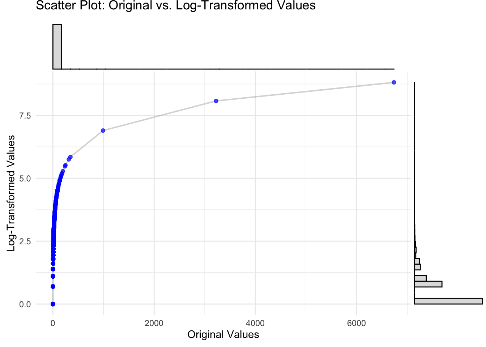

A skewness of \(( 0 )\) indicates a perfectly symmetric distribution. Positive skewness \(( g_1 > 0 )\) signifies a longer tail on the right side of the distribution, while negative skewness \(( g_1 < 0 )\) indicates a longer tail on the left. The code below calculates skewness for all numeric columns in delitos_data and presents the results in a formatted table:
A kurtosis of \(( 0 )\) (excess kurtosis) indicates tail behavior similar to a normal distribution. Positive kurtosis \(( g_2 > 0 )\) signifies heavier tails and more outliers (leptokurtic), while negative kurtosis \(( g_2 < 0 )\) indicates lighter tails and fewer outliers (platykurtic).
The coefficient of variation is particularly useful for comparing the variability of datasets with different units or widely different means. A lower CV indicates less variability relative to the mean, while a higher CV indicates greater variability.
# Compute the range for first standard deviationlower_bound <- mean_val - std_devupper_bound <- mean_val + std_devpaste0('lower_bound: ', round(lower_bound, 2), ' - upper_bound: ', round(upper_bound, 2))
[1] "lower_bound: -32.01 - upper_bound: 50"
# Count the number of points within 1 standard deviationwithin_1sd <-sum(delitos_data$AUTOMOTORES >= lower_bound & delitos_data$AUTOMOTORES <= upper_bound, na.rm =TRUE)percentage_1sd <- (within_1sd /nrow(delitos_data)) *100paste0('within_1sd: ', round(within_1sd, 2), ' - percentage_1sd: ', round(percentage_1sd, 2))
[1] "within_1sd: 1168 - percentage_1sd: 96.13"
# Create histogramggplot(delitos_data, aes(x = AUTOMOTORES)) +geom_histogram(binwidth =5, fill ="blue", alpha =0.5, color ="black") +# Add vertical lines for mean, median, and 1st SDgeom_vline(aes(xintercept = mean_val), color ="red", linetype ="dashed", size =1.2) +#geom_vline(aes(xintercept = median_val), color = "green", linetype = "dashed", size = 1.2) +geom_vline(aes(xintercept = lower_bound), color ="purple", linetype ="dashed", size =1) +geom_vline(aes(xintercept = upper_bound), color ="purple", linetype ="dashed", size =1) +# Labels and titlelabs(title ="Histogram of AUTOMOTORES with Mean, and 1SD Range",x ="AUTOMOTORES Values", y ="Frequency") +# Add annotation for 1SD rangeannotate("text", x = mean_val, y =10, label =paste(round(percentage_1sd, 2), "% 1SD", sep =""), color ="black", size =5, hjust =0.5, vjust =-1) +theme_minimal()
The Median Absolute Deviation (MAD) is a robust measure of variability that quantifies the dispersion of a dataset. It is defined as the median of the absolute deviations from the median of the data:
This ratio provides a scale-independent measure of variability, making it useful for comparing the dispersion of datasets with different units or scales. A higher MAD/Median ratio indicates greater relative variability.
# Compute the range for first standard deviationlower_bound <- median_val - mad_valupper_bound <- median_val + mad_valpaste0('lower_bound: ', round(lower_bound, 2), ' - upper_bound: ', round(upper_bound, 2))
[1] "lower_bound: 0 - upper_bound: 0"
# Count the number of points within 1 MADwithin_1mad <-sum(delitos_data$AUTOMOTORES >= lower_bound & delitos_data$AUTOMOTORES <= upper_bound, na.rm =TRUE)percentage_1mad <- (within_1mad /nrow(delitos_data)) *100paste0('within_1mad: ', round(within_1mad, 2), ' - percentage_1mad: ', round(percentage_1mad, 2))
[1] "within_1mad: 636 - percentage_1mad: 52.35"
# Create histogramggplot(delitos_data, aes(x = AUTOMOTORES)) +geom_histogram(binwidth =5, fill ="blue", alpha =0.5, color ="black") +# Add vertical lines for mean, median, and 1st SD#geom_vline(aes(xintercept = mean_val), color = "red", linetype = "dashed", size = 1.2) +geom_vline(aes(xintercept = median_val), color ="green", linetype ="dashed", size =1.2) +geom_vline(aes(xintercept = lower_bound), color ="purple", linetype ="dashed", size =1) +geom_vline(aes(xintercept = upper_bound), color ="purple", linetype ="dashed", size =1) +# Labels and titlelabs(title ="Histogram of AUTOMOTORES with Median, and 1MAD Range",x ="AUTOMOTORES Values", y ="Frequency") +# Add annotation for 1SD rangeannotate("text", x = median_val, y =10, label =paste(within_1mad, "points (", round(percentage_1mad, 2), "%) 1MAD", sep =""), color ="black", size =5, hjust =0.5, vjust =-1) +theme_minimal()
SEMOVIENTES AUTOMOTORES BANCOS PIRATERIA
Min. : 0.000 Min. : 0.000 Min. :0.00000 Min. :0.0000
1st Qu.: 0.000 1st Qu.: 0.000 1st Qu.:0.00000 1st Qu.:0.0000
Median : 0.000 Median : 0.000 Median :0.00000 Median :0.0000
Mean : 0.837 Mean : 8.995 Mean :0.04197 Mean :0.1029
3rd Qu.: 1.000 3rd Qu.: 3.000 3rd Qu.:0.00000 3rd Qu.:0.0000
Max. :22.000 Max. :909.000 Max. :5.00000 Max. :7.0000
1.6 Covariance Matrix
The covariance matrix \(( \Sigma )\) captures the pairwise covariances between variables in a dataset. For a dataset \(( X )\) with \(( n )\) observations and \(( p )\) variables, the covariance matrix is defined as:
To handle skewed data or reduce the impact of outliers, we apply a log transformation to the data. Let \(( Y = \log(X + 1) )\), where \(( \log )\) is applied element-wise and \(( 1 )\) is a matrix of ones to handle zeros. The log-transformed covariance matrix \(( \Sigma_{\text{log}} )\) is:
log_mean <-mean(log_x) # Compute mean in log-spaceprint(log_mean)
[1] 0.8704057
log_mean_exp <-exp(log_mean) # Convert back to original scaleprint(log_mean_exp)
[1] 2.387879
# Create the comparison tablecomparison_table <-data.frame(Index =seq_along(x), # Just an index for x-axisOriginal_Value = x,Log_Value = log_x)p1 <-ggplot(comparison_table, aes(x = Original_Value, y = Log_Value)) +geom_line(color ="gray70", size =0.7, alpha =0.5) +# Thin line connecting pointsgeom_point(alpha =0.7, color ="blue") +# Scatter points with transparencylabs(title ="Scatter Plot: Original vs. Log-Transformed Values",x ="Original Values",y ="Log-Transformed Values" ) +theme_minimal()# Add marginal histogramggMarginal( p1,type ="histogram", # Add marginal histogramsbins =40, # Number of bins for the histogrammargins ="both", # Add histogram to both x and y marginssize =5, # Size of the histograms relative to the scatter plotfill ="gray", # Fill color for the histogramcolor ="black", # Outline color for the histogramalpha =0.5# Transparency)

Euler steps describe how many multiplicative steps of \(( e )\) are needed to reach a given value.
For example, in our dataset:
Original Values: 0, 0, 8, 0, 0, 0
Log Values: 0, 0, 2.2, 0, 0, 0
Each log-transformed value represents the number of times we need to multiply 1 by \(( e )\) to reach the original value:
Measure Raw_Data Log_Transformed_Data
1 Mean 8.995062 0.8704057
2 Median 0.000000 0.0000000
3 Standard Deviation 41.002431 1.2636464
4 MAD 0.000000 0.0000000
# Transform the data to a long format for ggplotdelitos_long <- delitos_data %>%select(where(is.numeric)) %>%# Select only numeric columnspivot_longer(cols =everything(), names_to ="Crime Type", values_to ="Value")# Create faceted histogramsggplot(delitos_long, aes(x = Value)) +geom_histogram(bins =30, fill ="skyblue", color ="black", alpha =0.7) +facet_wrap(~`Crime Type`, scales ="free") +# Facet by crime typetheme_minimal() +labs(title ="Distributions of Crime Data",x ="Value",y ="Frequency" ) +theme(axis.text.x =element_text(size =5) # Reduce the font size of X-axis text )
# Transform the data to long format and apply log transformationdelitos_long_log <- delitos_data %>%select(where(is.numeric)) %>%mutate(across(everything(), ~log(.x), .names ="{col}")) %>%# Log transform (log(x + 1) to avoid log(0))pivot_longer(cols =everything(), names_to ="Crime Type", values_to ="Log Value")# Create faceted histograms for log-transformed valuesggplot(delitos_long_log, aes(x =`Log Value`)) +geom_histogram(bins =30, fill ="skyblue", color ="black", alpha =0.7) +facet_wrap(~`Crime Type`, scales ="free") +# Facet by crime typetheme_minimal() +labs(title ="Log-Transformed Distributions of Crime Data",x ="Log Value",y ="Frequency" ) +theme(axis.text.x =element_text(size =3) # Reduce the font size of X-axis text )
Redundant variables provide little additional information due to high correlation with others, leading to multicollinearity in models.
Mathematically, redundancy is detected using the covariance matrix \(\Sigma\), whose eigenvalues \(\lambda_i\) and eigenvectors \(v_i\) capture variance directions. A small eigenvalue \(\lambda_{\min} \approx 0\) suggests a near-linear dependency:
\(\Sigma v_{\min} = \lambda_{\min} v_{\min}\)
The eigenvector \(v_{\\min}\) identifies the redundant variable combination.
To confirm, we fit a regression model where one variable \(y\) is explained by others:
To quantify redundancy, we compute Variance Inflation Factors (VIFs) for each predictor \(x_j\):
\(VIF_j = \frac{1}{1 - R_j^2}\)
where \(R_j^2\) is the \(R^2\) value from regressing \(x_j\) on all other predictors.
\(VIF_j = 1\) → No multicollinearity.
\(VIF_j > 5\) → Moderate multicollinearity.
\(VIF_j > 10\) → Severe multicollinearity, indicating redundancy.
A high VIF suggests that \(x_j\) contributes little independent information and may be removed to improve model stability.
Eigenvalues and eigenvectors are fundamental tools in linear algebra, representing the directions and scaling factors of a matrix transformation.
Eigenvalues: Solving the Characteristic Equation
The eigenvalues \(( \lambda )\) of a matrix \(( A )\) satisfy:
\(\det(A - \lambda I) = 0\)
Where: - \(( A )\) is the matrix. - \(( \lambda )\) is the eigenvalue (unknown). - \(( I )\) is the identity matrix (a diagonal matrix with 1s on the diagonal).
The characteristic polynomial is derived by computing \(( \det(A - \lambda I) )\) and solving for \(( \lambda )\).
# Compute the characteristic polynomial# A - λI (lambda is the eigenvalue)identity_matrix <-diag(nrow(matrix_a)) # Create identity matrixprint(identity_matrix)
[,1] [,2]
[1,] 1 0
[2,] 0 1
lambda <-seq(0, 10, by =0.01) # Range of lambda values for solvingdet_values <-numeric(length(lambda)) # Store determinant values# Calculate det(A - λI) for each lambdafor (i inseq_along(lambda)) { char_matrix <- matrix_a - lambda[i] * identity_matrix det_values[i] <-det(char_matrix)}
1.8.12️⃣ Eigenvectors: Solving for Principal Directions
For each eigenvalue ( ), the eigenvector ( v ) satisfies:
[ (A - I)v = 0 ]
This is a homogeneous system of linear equations. Solving this system gives the eigenvector(s) associated with each eigenvalue.
1.8.23️⃣ Implementation in R
Below is the step-by-step implementation in R:
# Find approximate eigenvalues where det(A - λI) = 0eigenvalue_indices <-which(abs(det_values) <1e-4) # Tolerance for numerical precisioneigenvalues <- lambda[eigenvalue_indices]print("Eigenvalues:")
[1] "Eigenvalues:"
print(eigenvalues)
numeric(0)
# Step 3: Compute eigenvectors for each eigenvalueeigenvectors <-list()for (i inseq_along(eigenvalues)) { lambda_i <- eigenvalues[i] char_matrix <- matrix_a - lambda_i * identity_matrix# Solve (A - λI)v = 0 using Gaussian elimination eigenvector <-nullspace(char_matrix) eigenvectors[[i]] <- eigenvector}# Display eigenvectorsprint("Eigenvectors:")
[1] "Eigenvectors:"
print(eigenvectors)
list()
# Utility function for null space (solve for eigenvectors)nullspace <-function(A, tol =1e-7) { svd_res <-svd(A) null_mask <- svd_res$d <= tolif (any(null_mask)) {return(svd_res$v[, null_mask, drop =FALSE]) } else {return(matrix(0, nrow =ncol(A), ncol =0)) }}
# Covariance matrix cm_delitos_data <- delitos_data %>%select(where(is.numeric)) %>%cov()# Compute eigenvalues and eigenvectorseigen_results <- cm_delitos_data %>%eigen()# Extract eigenvalues and eigenvectorseigenvalues <- eigen_results$valueseigenvectors <- eigen_results$vectors# Display eigenvalues and eigenvectorsprint(eigenvalues)
# Normalize the eigenvector by dividing by the largest absolute valuenormalized_eigenvector <- smallest_eigenvector /max(abs(smallest_eigenvector))print(normalized_eigenvector)
# Get numeric variable names (order matches eigenvector indices)variable_names <-colnames(delitos_data %>%select(where(is.numeric)))# Sort normalized eigenvector by absolute contribution (descending order)sorted_contributions <-sort(abs(normalized_eigenvector), decreasing =TRUE)# Get the indices of the top contributionstop_indices <-order(abs(normalized_eigenvector), decreasing =TRUE)[1:4]# Get the names of the top variablestop_variable_names <- variable_names[top_indices]# Print the top variable namesprint(top_variable_names)
[1] "BANCOS" "PIRATERIA" "SECUESTRO" "TERRORISMO"
# Fit a regression model to confirm the relationshipmodel <-lm(BANCOS ~ PIRATERIA + SECUESTRO + TERRORISMO, data =data.frame(cm_delitos_data))summary(model)
Call:
lm(formula = BANCOS ~ PIRATERIA + SECUESTRO + TERRORISMO, data = data.frame(cm_delitos_data))
Residuals:
Min 1Q Median 3Q Max
-5.8730 -0.4841 0.6268 1.6653 3.5698
Coefficients:
Estimate Std. Error t value Pr(>|t|)
(Intercept) -1.77660 0.80704 -2.201 0.0464 *
PIRATERIA 0.47702 0.22002 2.168 0.0493 *
SECUESTRO -0.04399 0.31014 -0.142 0.8894
TERRORISMO 0.47585 0.27419 1.735 0.1063
---
Signif. codes: 0 '***' 0.001 '**' 0.01 '*' 0.05 '.' 0.1 ' ' 1
Residual standard error: 2.721 on 13 degrees of freedom
Multiple R-squared: 0.9814, Adjusted R-squared: 0.9771
F-statistic: 228.6 on 3 and 13 DF, p-value: 1.704e-11
The effective variance and effective standard deviation are measures of the overall variability in the dataset. They are derived from the determinant of the covariance matrix, which captures the generalized variance of the data. For log-transformed data, these metrics are computed similarly but on the log-transformed covariance matrix.
# Effective Standard Deviationdet(cov_matrix)^(1/(ncol(cov_matrix) *2))
[1] 14.87055
# Log-Transformed Effective Standard Deviationdet(log(cov_matrix +1))^(1/(ncol(cov_matrix) *2))
[1] 0.843948
1.10 Linear Dependency and Precision Matrix
Linear dependency in data occurs when some variables can be expressed as linear combinations of others, leading to redundancy. This is identified through the covariance matrix \(( \Sigma )\) and its eigenvalues, where a near-zero eigenvalue indicates dependency.
The precision matrix \(( \Sigma^{-1} )\), the inverse of the covariance matrix, quantifies conditional dependencies. It highlights direct variable relationships, with zero entries indicating independence given other variables. These concepts are crucial for multicollinearity detection and improving model interpretability.
Multicollinearity occurs when predictor variables are highly correlated, making it difficult to isolate their individual effects in a model.
# Compute precision matrixS_inv <-solve(cov_matrix)# Display precision matrix (should match example values)cat("Precision Matrix (S⁻¹):\n")
Distance Matrix: \(( D )\) where \(( D_{ij} )\) represents the distance between the centroids of \(( p_i )\) and \(( p_j )\).
1.11.2 Phenomenon Classification:
Local (Within Polygon): Phenomenon occurs exclusively inside a single polygon \(( p_i )\). Thus, \(Y_i = f(\text{Internal factors of } p_i)\).
Subnational (Cluster of Neighbors): Phenomenon clusters among adjacent polygons. Thus, \(Y_i = \beta_0 + \beta_1 \sum_{j \in N(i)} Y_j + \epsilon\) where \(( N(i) )\) are the neighbors of \(( p_i )\).
National/International (Neighbors + Non-Neighbors): Phenomenon spans both adjacent and non-adjacent polygons (e.g., trade networks). Thus, \(Y_i = f\left(\sum_j w_{ij} Y_j\right)\) where \(( w_{ij} )\) depends on distance or network connectivity.
Local-Subnational (Clear Boundaries): Clear separation between local (city) and subnational (state) boundaries among neighbors. Thus, \(Y_i = \alpha + \gamma \cdot \text{State}_i + \epsilon\).
Local-National/International (Non-Neighbors): Phenomenon connects non-neighboring polygons with clear boundaries (e.g., migration between distant cities). Thus, \(Y_i = f(Y_j)\) where \(( A_{ij} = 0 )\) (i.e., not adjacent) but \(( D_{ij} )\) is significant.
Local-Subnational (Fuzzy Boundaries): Ambiguous administrative boundaries (e.g., overlapping jurisdictions). Thus, \(\mu_{ik} \in [0,1]\) indicating the degree to which \(( p_i )\) belongs to region \(( k )\).
1.12 Final Project Activities
Group stations based on your analysis interests to illustrate spatial criminal phenomena.
Define the issue for decision-making that you propose supported by the exploratory analysis of multidimensional data.
Upload your work by creating a GitHub pull request with your group’s .qmd file in the appendix section.
1.13 Class Participation Assessment
Replicate the exploratory analysis on the selected stations as demonstrated in the lecture, and compare your results with those of other groups.
Upload your analysis under the respective subsections titled Augmented Data Analyst and Prompts.